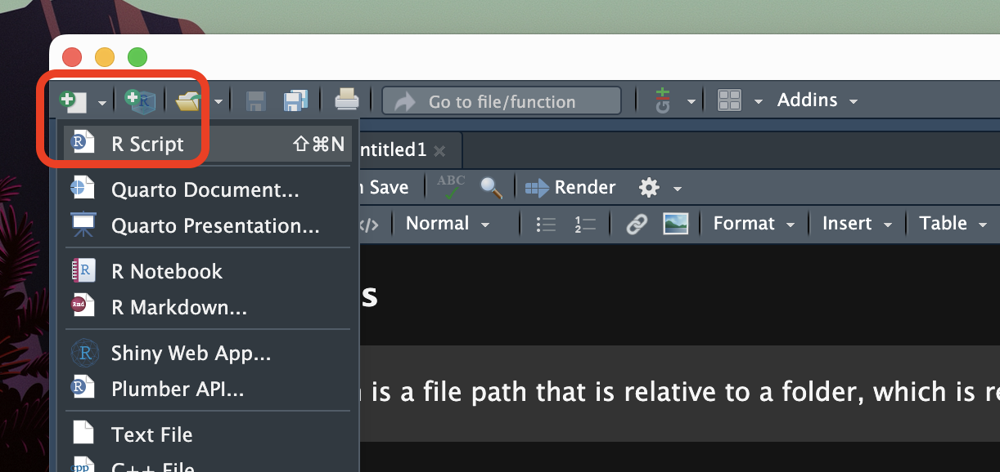
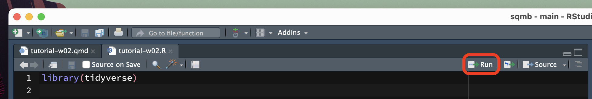

QML tutorial - Week 2
1 Some basics
In the tutorial last week you’ve been playing around with R and variables.
But what if you want to import data in R?
Easy! You can use the read_*() functions to read your files into R. But before we dive in, let’s first talk about some computer basics. (You can skip this section if it’s too basic for you)
1.1 Files, folder and file extensions
Files saved on your computer live in a specific place. For example, if you download a file from a browser (like Google Chrome, Safari or Firefox), the file is normally saved in the Download folder.
But where does the Download folder live? Usually, in your user folder! The user folder normally is the name of your account or a name you picked when you created your computer account. In my case, my user folder is simply called ste.
So, let’s assume I download a file, let’s say big_data.csv, in the Download folder of my user folder.
Now we can represent the location of the big_data.csv file like so:
ste/
└── Downloads/
└── big_data.csvTo mark that ste and Downloads are folders, we add a final forward slash /. That simply means “hey! I am a folder!”. big_data.csv is a file, so it doesn’t have a final /.
Instead, the file name big_data.csv has a file extension. The file extension is .csv. A file extension marks the type of file: in this the big_data file is a .csv file, a comma separated value file (we will see an example of what that looks like later).
Different file type have different file extensions:
- Excel files:
.xlsx. - Plain text files:
.txt. - Images:
.png,.jpg,.gif. - Audio:
.mp3,.wav. - Video:
.mp4,.mov,.avi. - Etc…
1.2 File paths
Now, we can use an alternative, more succinct way, to represent the location of the big_data.csv:
ste/Downloads/big_data.csv
This is called a file path! It’s the path through folders that lead you to the file. Folders are separated by / and the file is marked with the extension .csv.
Now the million pound question: where does ste/ live on my computer???
User folders are located in different places depending on the operating system you are using:
On macOS: the user folder is in
/Users/.- You will notice that there is a forward slash also before the name of the folder. That is because the
/Users/folder is a top folder, i.e. there are no folders further up in the hierarchy of folders. - This means that the full path for the
big_data.csvfile on a computer running macOS would be:/Users/ste/Downloads/big_data.csv.
- You will notice that there is a forward slash also before the name of the folder. That is because the
On Windows: the user folder is in
C:/Users/- You will notice that
Cis followed by a colon:. That is becauseCis a drive, which contains files and folders.C:is not contained by any other folder, i.e. there are no other folders aboveC:in the hierarchy of folders. - This means that the full path for the
big_data.csvfile on a Windows computer would be:C:/Users/ste/Downloads/big_data.csv.
- You will notice that
When a file path starts from a top-most folder, we call that path the absolute file path.
There is another type of file paths, called relative paths. A relative path is a partial file path, relative to a specific folder. You will learn how to use relative paths below, when we will go through importing files in R using R scripts below.
Importing files in R is very easy with the tidyverse packages. You just need to know the file type (very often the file extension helps) and the location of the file (i.e. the file path).
The next sections will teach you how to import data in R!
2 The data
For this tutorial, we will use the data from this paper: Song et al. 2020. Second language users exhibit shallow morphological processing. DOI: 10.1017/S0272263120000170.
The study consisted of a lexical decision task in which participants where first shown a prime, followed by a target word for which they had to indicate whether it was a real word or a nonce word.
The prime word belonged to one of three possible groups (Relation_type in the data) each of which refers to the morphological relation of the prime and the target word:
Unrelated: for example, prolong (assuming unkindness as target, [[un-kind]-ness]).Constituent: unkind.NonConstituent: kindness.
The expectations are that
- Lexical decisions for native English participants should be facilitated in the
Constituentcondition, but not in theUnrelatedandNonConstituentconditions. - Lexical decisions for non-native English participants should be facilitated both in the
ConstituentandNonCostituentcondition, but not in theUnrelatedcondition.
We can interpret “facilitated lexical decisions” as higher accuracy and shorter reaction times.
In section 2-4 of this tutorial you will learn about:
The data file format (a
.csv file).How to read data with the
read_csv()function from the tidyverse packages and what packages are.How to view the imported data.
2.1 Download the data file
Please, follow these instructions carefully.
Download the file with the data by right-clicking on the following link and download the file: shallow.csv. (Note that tutorial files are also linked in the Course content page)
Create a folder called
data/(the slash is there just to remind you that it’s a folder, but you don’t have to include it in the name) in the RStudio project of the course.To create a folder, go to the Files tab of the bottom-right panel in RStudio.
Make sure you are viewing the project’s main folder.
Click on the
New Folderbutton, enter “data” in the text box and clickOK
Move the downloaded file into the
data/folder.Open a Finder or File Explorer window.
Navigate to the folder where you have saved the downloaded file (it will very likely be the
Downloads/folder).Copy the file.
In Finder or File Explorer, navigate to the RStudio project folder, then the
data/folder, and paste the file in there.
The rest of the tutorial will assume that you have created a folder called data/ in the RStudio project folder and that shallow.csv is in that folder.
I recommend you to start being very organised with your files from now, whether it’s for this course or your dissertation or else. I also suggest to avoid overly nested structures (for example, avoid having one folder for each week for this course. Rather, save all data files in the data/ folder).
2.2 About shallow.csv
shallow.csv is a .csv file. It looks like this (the following is just an excerpt from the file, specifically the first 5 lines):
Group,ID,List,Target,ACC,RT,logRT,Critical_Filler,Word_Nonword,Relation_type,Branching
L1,L1_01,A,banoshment,1,423,6.0474,Filler,Nonword,Phonological,NA
L1,L1_01,A,unawareness,1,603,6.4019,Critical,Word,Unrelated,Left
L1,L1_01,A,unholiness,1,739,6.6053,Critical,Word,Constituent,Left
L1,L1_01,A,bictimize,1,510,6.2344,Filler,Nonword,Phonological,NAA .csv file is basically a format to save tabular data (i.e. data that looks like a table). To separate each column, a .csv file uses a comma , (hence the name “comma separated values”).
The first line of the file indicates the names of the columns of the table:
Group,ID,List,Target,ACC,RT,logRT,Critical_Filler,Word_Nonword,Relation_type,BranchingThere are 11 columns.
Then, the rest of the file contains the other rows of the table, with values for each of the 11 columns. Of course, separated by commas.
L1,L1_01,A,banoshment,1,423,6.0474,Filler,Nonword,Phonological,NA
L1,L1_01,A,unawareness,1,603,6.4019,Critical,Word,Unrelated,Left
L1,L1_01,A,unholiness,1,739,6.6053,Critical,Word,Constituent,Left
L1,L1_01,A,bictimize,1,510,6.2344,Filler,Nonword,Phonological,NAThe shallow.csv file should be placed in the data/ folder of the course RStudio project.
Now, let’s import the data!
Importing .csv files is very easy. You can use the read_csv() function from a collection of R packages known as the tidyverse.
But what are R packages? Find out in the following section.
3 R packages
When you install R, a library of packages is also installed. Packages are like plug-ins, they provide R with extra functionalities. The default R library contains all of the base R packages.
You can check all of the currently installed packages in the bottom-right panel of RStudio, in the Packages tab.
If you want to find the path of the R library on your computer, type .libPaths() in the Console. The function returns (i.e. outputs) the path or paths where your R library is.
3.0.1 Install packages
You can install extra packages in the R library in two ways:
- You can use the
install.packages()function. This function takes the name of package you want to install as a string, for exampleinstall.packages("cowsay") - Or you can go the
Packagestab in the bottom-right panel of RStudio and click onInstall.
Go ahead and try to install a package using the second method. Install the fortunes package (remember to quote the name of the package). After installing you will see that the package fortunes is listed in the Packages tab.
3.0.2 Attach packages
Now, to use a package you need to attach the package with the library() function.
Let’s attach the fortunes package. Run the following code in the Console. Note that while install.packages("fortunes") takes the name of the package as a string, library(fortunes) takes the name of the package without quotes.
library(fortunes)Now you can use the functions provided by the attached package. Try it out!
fortune()
Tom Backer Johnsen: I have just started looking at R, and are getting more and
more irritated at myself for not having done that before. However, one of the
things I have not found in the documentation is some way of preparing output
from R for convenient formatting into something like MS Word.
Barry Rowlingson: Well whatever you do, don't start looking at LaTeX, because
that will get you even more irritated at yourself for not having done it before.
-- Tom Backer Johnsen and Barry Rowlingson
R-help (February 2006)To learn what a function does, you can check its documentation by typing the function name preceded by a ? question mark. Type ?function in the Console and hit ENTER to see the function documentation.
Warning
Remember, you need to install a package only once but you need to attach it with library() every time you start R.
Think of install.packages() as mounting a light bulb (installing the package) and library() as the light switch (attaching the package).

4 Import and view data
4.1 Import the data
To import data in R we will use the read_csv() function from the readr package, one of the tidyverse packages.
The read_csv() function only requires you to specify the file path as a string (remember, strings are quoted between " ", for example "year_data.txt").
On my computer, the file path of shallow.csv is /Users/ste/qml/data/shallow.csv, but on your computer the file path will be different, of course.
Also, note that it is not enough to use the read_csv() function. You also must assign the output of the read_csv() function (i.e. the data we are reading) to a variable, using the assignment arrow <-.
And since the read_csv() is a function from the tidyverse, you first need to attach the tidyverse packages with library(tidyverse) (remember, you need to attach packages only once per session).
This will attach a set of the tidyverse packages that are commonly used in most data analysis applications, including readr. Of course, you can also attach the individual packages directly: library(readr). If you use library(tidyverse) there is no need to attach individual tidyverse packages.
So, putting all together, here’s the code. Remember to change the file path to match the path of the file on your computer. Run the code in the Console to read the data.
library(tidyverse)
# CHANGE THE FILE PATH TO MATCH THE PATH ON YOUR COMPUTER
shallow <- read_csv("/Users/ste/qml/data/shallow.csv")Fantastic!
4.2 View the data
Now we can view the data.
The easiest way is to click on the name of the data listed in the Environment tab, in the top-right panel of RStudio.
You will see a nicely formatted table, as you would in a programme like Excel.
Data tables in R (i.e. spreadsheet-like data) are called data frames or tibbles.1
The shallow data frame contains 11 columns (called variables in the Environment tab). The 11 columns are the following:
Group:L1vsL2speakers of English.ID: Subject unique ID.List: Word list (A to F).Target: Target word in the lexical decision trial.ACC: Lexical decision response accuracy (0incorrect response,1correct response).RT: Reaction times of response in milliseconds.logRT: Logged reaction times.Critical_Filler: Whether the trial was afillerorcritical.Word_Nonword: Whether the Target was a realWordor aNonword.Relation_type: The type of relation between prime and target word (Unrelated,NonCostituent,Constituent,Phonological).Branching: Constituent syntactic branching,LeftandRight(shout out to Charlie Puth).
Great stuff! See how easy it was to import data?
However, you can easily import other file types as long as they are tabular or rectangular (i.e. spreadsheet-like), like Excel files.
5 R scripts
So far, you’ve been asked to write code in the Console and run it there.
But this is not very efficient. Every time, you need to write the code and execute it in the right order and it quickly becomes very difficult to keep track of everything when things start getting more involved.
A solution is to use R scripts.
For the rest of this tutorial, you will write all code in an R script.
5.1 Create an R script
First, create a folder called code in your RStudio project folder. This will be the folder where you will save all of your R scripts.
Now, to create a new R script, look at the top-left corner of RStudio: the first button to the left looks like a white sheet with a green plus sign. This is the New file button. Click on that and you will see a few options to create a new file.
Click on R Script. A new empty R script will be created and will open in the File Editor window of RStudio.

Note that creating an R script does not automatically saves it on your computer. To do so, either use the keyboard short-cut CMD+S/CTRL+S or click on the floppy disk icon in the menu below the file tab.

Save the file inside the code/ folder with the following name: tutorial-w02.R.
5.2 Write code
Now, let’s start filling up that script!
Generally, you start the script with calls to library() to load all the packages you need for the script.
Now we only need one package, tidyverse, but in most cases you will need more than one! The best practice is to attach all of packages first, in the top of your script. Please, get in the habit of doing this from now, so that you can keep your scripts tidy and pretty!
Go ahead, write the following code in the top of the tutorial-w02.R script.
library(tidyverse)
shallow <- read_csv("./data/shallow.csv")Wait, what is that "./data/shallow.csv"? That’s a relative path. We briefly mentioned relative paths above, but let’s understand the details now.
5.3 Relative paths
When you are using R scripts in RStudio projects, the ./ folder paths are relative to is the project folder! This is true whichever the name of the folder/project and whichever it’s location on your computer.
For example, if your project it’s called awesome_proj and it’s in Downloads/stuff/, then if you write ./data/results.csv you really mean Downloads/stuff/awesome_proj/data/results.csv!
How does R know the path is relative to the project folder?
That is because when working with RStudio projects, all relative paths are relative to the project folder (i.e. the folder with the .Rproj file)!
The folder which relative paths are relative to is called the working directory (directory is just another way of saying folder).
The code read_csv("./data/shallow.csv") above will work because you are using an RStudio project and inside the project folder there is a folder called data/ and in it there’s the shallow.csv file.
So from now on I encourage you to use RStudio projects, R scripts and relative paths always!
The benefit of doing so is that, if you move your project or rename it, or if you share the project with somebody, all the paths will just work because they are relative!
5.4 Run the script!
Finally, the time has come to run the script.
There are several ways of doing this. The most straightforward is to click on the Run button. You can find this in the top-right corner of the script window.

An alternative way is to place the text cursor on the line of code you want to run and then press CMD+ENTER/CTRL+ENTER. This will run the line of code and move the text cursor to the next line of code.
You can even select multiple lines of code (as you would select text) and press CMD+ENTER/CTRL+ENTER to run multiple lines of code!
Now that you know how to use R scripts and run code in them, I will assume that you will keep writing new code from this tutorial in your script and run it from there!
Just another tip: sometimes we might want to add a few lines of text in our script, for example to take notes.
You can add so-called comments in R scripts, simply by starting a line with #.
For example:
# This is a comment. Let's add 6 + 3.
6 + 3[1] 96 Data transformation
Data transformation is a fundamental aspect of data analysis.
After the data you need to use is imported into R, you will have to filter rows, create new columns, or join data frames, among many other transformation operations.
In this tutorial we will learn how to obtain summary measures and how to count occurrences using the summarise() and count() functions.
6.1 Summary measures
During the lecture, we have learnt two types of measures.
When you work with data, you always want to get summary measures for most of the variables in the data.
Data reports usually include summary measures. It is also important to understand which summary measure is appropriate for which type of variable.
We have covered this in the lecture, so we won’t go over it again here. Instead, you will learn how to obtain summary measures using the summarise() function from the dplyr tidyverse package.
summarise() takes at least two arguments:
The data frame to summarise.
One or more summary functions.
For example, let’s get the mean the reaction time column RT. Easy!
summarise(shallow, RT_mean = mean(RT))Great! The mean reaction times of the entire sample is 867 ms.
What if we want also the standard deviation? Easy!
summarise(shallow, RT_mean = mean(RT), RT_sd = sd(RT))# This is a comment. Let's add 6 + 3.
6 + 3[1] 9Now we know that reaction times are on average 867 ms long and have a standard deviation of about 293 ms (rounded to the nearest integer).
Let’s go all the way and also get the minimum and maximum RT values.
summarise(
shallow,
RT_mean = mean(RT), RT_sd = sd(RT),
RT_min = min(RT), RT_max = max(RT)
)Fab! When writing a data report, you could write something like this.
Reaction times are on average 867 ms long (SD = 293 ms), with values ranging from 0 to 1994 ms.
We will learn more about standard deviations from Week 4 on, but for now just think of this as a relative measure of how dispersed the data are around the mean: the higher the SD, the greater the dispersion around the mean, i.e. the greater the variability in the data.
When required, you can use the median() function to calculate the median, instead of the mean(). Go ahead and calculate the median reaction times in the data. Is it similar to the mean?
Note that R has a mode() function, but alas this is not the statistical mode. To get the mode of a categorical variable you can just count the occurrences of the values of that variable and the value that occurs the most is the mode!
Keep reading to learn how to count occurrences.
6.2 Count occurrences
We can use the count() function from the dplyr tidyverse package to count the number of occurrences for each value of a specific column. Let’s count how many trials are correct, i.e. let’s count occurrences in the ACC column.
Accuracy has been coded with 0 for incorrect and 1 for correct. We will see how this is not an ideal, although very common way, of coding binary variables. For now let’s keep it as is.
The function count() takes the name of tibble and the name of column you want to count values in.
count(shallow, ACC)How many correct responses are there in the shallow tibble?
Note that you can add multiple column names, separated by commas, to get counts for the combinations of values of each column.
Try to get counts of the combination of ACC and Group (L1 vs L2 participants). Replace ... with the right code.
count(shallow, ...)Are there differences in accuracy between the L1 and L2 group?
6.3 Grouping data
Sometimes you might want to get summary measures for one variable depending on different values of another variable.
You can use the group_by() function from the dplyr tidyverse package, together with summarise() to achieve that. Let’s see how it works.
group_by(shallow, Group) %>%
summarise(
RT_mean = mean(RT),
RT_sd = sd(RT)
)The group_by() function takes at least two arguments:
The name of the tibble to group.
The name of the columns to group the tibble by, separated by commas.
Here we are grouping shallow by Group.
If you are baffled by that %>%, keep on reading.
6.4 What the pipe?!
Wait, what is that thing, %>%?
It’s called a pipe. Think of a pipe as a teleporter.
In the code above we are chaining two functions together using the pipe opeartor %>%. The output of the first function (group_by()) is “teleported” into the second function summarise().
The pipe %>% teleports the output of the preceding function as the first argument of the following function. The output of group_by is a (grouped) tibble, and summarise() needs a tibble as its first argument.
That’s why the code above works!
In fact, you can even use a pipe for the tibble of group_by(), like so:
shallow %>%
group_by(Group) %>%
summarise(
RT_mean = mean(RT),
RT_sd = sd(RT)
)You see that the output of the code is the same here as it is above.
For comparison, this is what the code would look like without the pipe.
grouped_shallow <- group_by(shallow, Group)
summarise(
grouped_shallow,
RT_mean = mean(RT),
RT_sd = sd(RT)
)Don’t worry too much if the concept of the pipe is not clear yet. It should become clearer later.
7 Summary
You made it! You completed this week’s tutorial.
Here’s a summary of the R functions you learnt.
Footnotes
A tibble is a special data frame. We will learn more about tibbles in the following weeks.↩︎